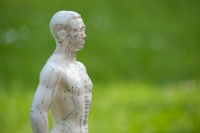

Chinesische HeilmethodeIn meiner Praxis verwende ich die chinesische Heilmethode zur Diagnostik. Diese jahrtausendalte Heilkunst gewährt uns tiefe Erkenntnisse über das komplexe Zusammenspiel von Körper, Geist und Lebensumständen. Anhand der Puls- und Zungendiagnose, Farbe und Beschaffenheit der Haut geben die objektiven Befunde Aufschluss über Zusammenhänge des Krankheitsgeschehens. Aber auch die Organuhr, die Meridianverläufe (Energiebahnen) und die Betrachtung der Augendiagnose erweitern die individuellen Erkenntnisse. Auch die Ernährung nach den Prinzip der 5 Elemente-Lehre kann unterstützend wirksam sein. Akupunkturpunkte werden mit der Farblicht-Therapie sanft aber wirkungsvoll stimuliert. |
 |